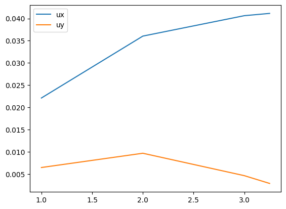
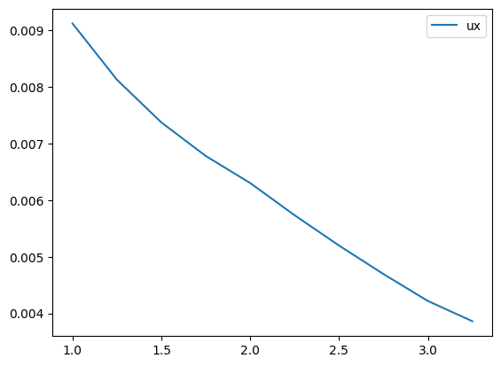
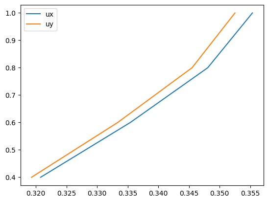
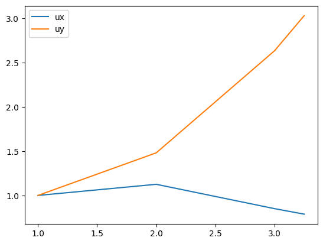

Inflow analysis#
Load profile data#
[1]:
import pathlib
from cfdmod.analysis.inflow.profile import InflowData
data_folder = pathlib.Path("./fixtures/tests/inflow/pitot_inlet")
profile = InflowData.from_files(
hist_series_path=data_folder / "hist_series.csv", points_path=data_folder / "points.csv"
)
# Or you can manually instantiate a profile object
# data = pd.read_csv(data_folder / "hist_series.csv")
# points = pd.read_csv(data_folder / "points.csv")
# profile = InflowData(data=data, points=points)
Mean velocity data#
[2]:
import matplotlib.pyplot as plt
from cfdmod.analysis.inflow.functions import calculate_mean_velocity
mean_velocity_components = ["ux", "uy"]
mean_velocity_data = calculate_mean_velocity(
inflow_data=profile, for_components=mean_velocity_components
)
for component in mean_velocity_components:
x = profile.points["z"]
y = mean_velocity_data[f"{component}_mean"]
plt.plot(x, y, label=f"{component}")
plt.legend()
plt.show()
plt.close()

Turbulence intensity#
[4]:
from cfdmod.analysis.inflow.functions import calculate_turbulence_intensity
turbulence_intersity_components = ["ux"]
turbulence_intersity_data = calculate_turbulence_intensity(
inflow_data=profile, for_components=turbulence_intersity_components
)
for component in turbulence_intersity_components:
x = profile.points["z"]
y = turbulence_intersity_data[f"I_{component}"]
plt.plot(x, y, label=f"{component}")
plt.legend()
plt.show()
plt.close()

Spectral density#
Set normalization parameters
[5]:
from cfdmod.analysis.inflow.profile import NormalizationParameters
params = NormalizationParameters(reference_velocity=1.0, characteristic_length=1.0)
params
[5]:
NormalizationParameters(reference_velocity=1.0, characteristic_length=1.0)
[6]:
from cfdmod.analysis.inflow.functions import calculate_spectral_density
spectral_components = ["ux", "uy"]
spectral_data = calculate_spectral_density(
inflow_data=profile,
target_index=1,
for_components=spectral_components,
normalization_params=params,
)
for component in spectral_components:
x = spectral_data[f"f ({component})"]
y = spectral_data[f"S ({component})"]
plt.plot(x, y, label=f"{component}")
plt.legend()
plt.show()
plt.close()

Autocorrelation#
[7]:
from cfdmod.analysis.inflow.functions import calculate_autocorrelation
autocorrelation_components = ["ux", "uy"]
autocorrelation_data = calculate_autocorrelation(
inflow_data=profile, anchor_point_idx=0, for_components=autocorrelation_components
)
for component in autocorrelation_components:
x = profile.points["z"]
y = autocorrelation_data[f"coef_{component}"]
plt.plot(x, y, label=f"{component}")
plt.legend()
plt.show()
plt.close()
